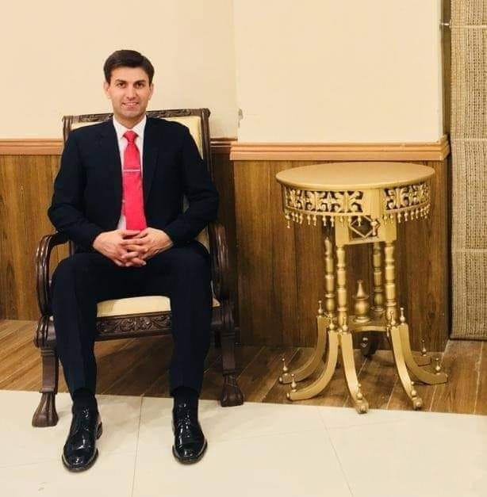
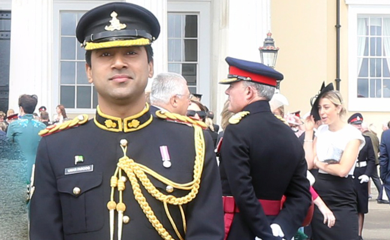

Another Pakistan Army’s major selected as an Instructor in Royal Military Academy, Sandhurst
A serving Pakistan Army’s major Rizwan ul Hassan has been selected as an Instructor at the Royal Military Academy (RMA) at Sandhurst will shortly be leaving for the UK. Major Rizwan hails in his ranks as an ex Veteran in Pakistan’s war on terror and a Platoon Commander at the Pakistan Military Academy (PMA).
Major Rizwan himself.
This is not the first time that a serving Major of Pakistan Army also served as an Instructor the Royal Military Academy, so far 2 Pakistani Major have served as an instructor out of whom Major Umar Farooq received a letter of appreciation nominated by Queen Elizabeth for leading the best platoon at RMA, Sandhurst.
Major Umar himself.
The selection of multiple Pakistani Majors at Royal Military Academy Sandhurst is indeed a proud moment for Pakistan and puts forward a strong claim of the professionalism that possess within Pakistan Army.
Also Read: From the people of Pakistan, a 100 bed hospital was inaugurated in Afghanistan.